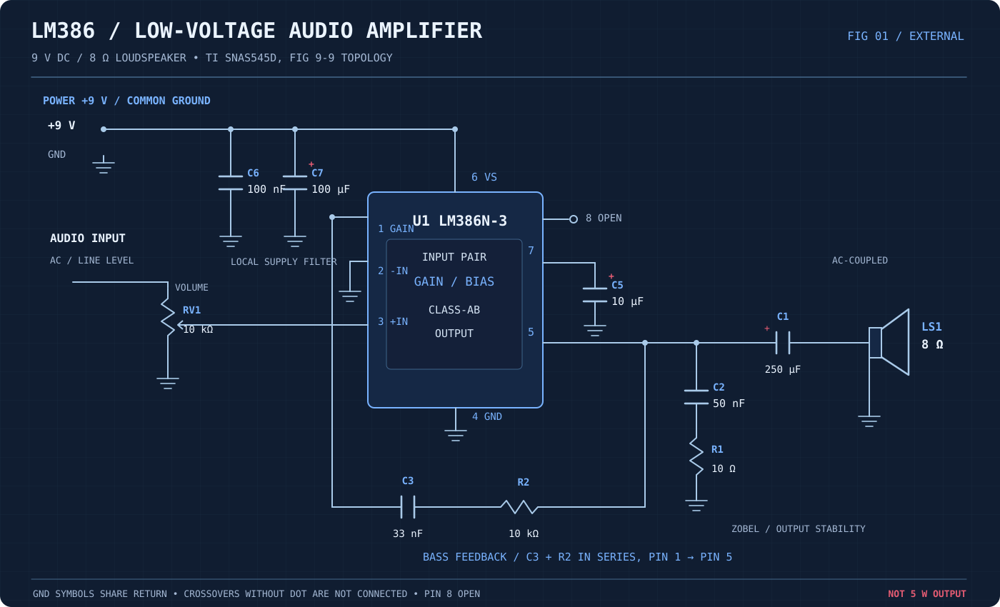
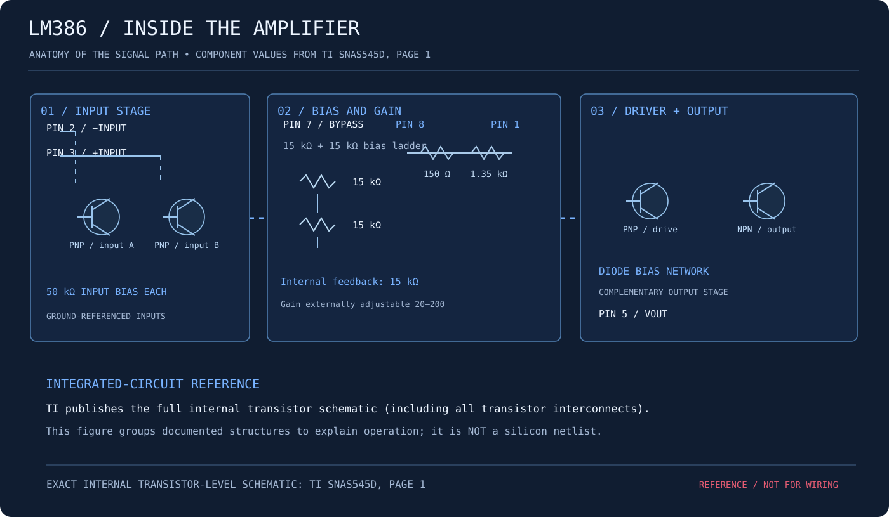
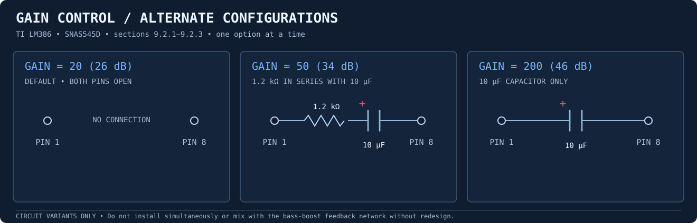

LM386.
A real, low-voltage audio-amplifier circuit—documented against Texas Instruments SNAS545D. The external diagram follows the manufacturer's bass-boost application and adds clearly identified supply filtering. The internal view is a functional topology map; the exact transistor schematic is linked from TI.
Wiring schematic.
Source circuit: TI datasheet Figure 9-9 (bass boost). The 10 µF capacitor on bypass pin 7 and the 100 nF + 100 µF supply capacitors are the extra local decoupling shown here. The 9 V source and 8 Ω load are within the documented application range.

Inside the LM386.
Documented groups include the 50 kΩ input bias paths, the 15 kΩ bias chain, 150 Ω and 1.35 kΩ gain-setting resistors, bipolar transistor input and driver stages, output bias diodes, and class-AB output stage. The map explains their roles; it is not a replacement for TI's complete transistor-level schematic on page 1.

Change the gain, not the wattage.
Gain depends on the external connection between pins 1 and 8. These three alternatives are grounded in TI sections 9.2.1–9.2.3. They are separate circuit configurations, not parts to add simultaneously to the 9 V bass-boost drawing above.

Components and connections.
The values listed below match the displayed external schematic. Use a suitably rated regulated 9 V DC supply; the grounding symbols indicate one common return.
| Ref | Value / part | Connection / function |
|---|---|---|
| U1 | LM386N-3 or compatible 9 V LM386 variant | Pin 6 to +9 V; pins 2, 4 to GND; pin 8 open. |
| RV1 | 10 kΩ potentiometer | Audio input to high terminal; low to GND; wiper to pin 3 (+IN). |
| C1 | 250 µF electrolytic, ≥16 V | Series output coupling: positive terminal toward pin 5, negative toward 8 Ω speaker. |
| C2 + R1 | 50 nF capacitor + 10 Ω resistor | Series Zobel network: output pin 5 to ground. Neither part is directly across the speaker. |
| C3 + R2 | 33 nF capacitor + 10 kΩ resistor | Series bass-feedback RC from pin 1 to pin 5, before C1. Pin 8 remains open. |
| C5 | 10 µF electrolytic, ≥16 V | Bypass from pin 7 (+) to ground (−); noise reduction. |
| C6 | 100 nF ceramic, ≥16 V | Local +9 V to GND bypass at pin 6; engineering addition. |
| C7 | 100 µF electrolytic, ≥16 V | Additional +9 V to GND bulk decoupling; positive to +9 V. |
| LS1 | 8 Ω speaker, 1 W or higher rating | After the output capacitor to ground. A 5 W-rated speaker is also suitable. |
Datasheet references.
Texas Instruments, LM386 Low Voltage Audio Power Amplifier, SNAS545D (2023). See page 1 for the real internal transistor schematic, page 5 for measured output-power ratings, page 10 for gain and bass-feedback theory, pages 12–13 for gain alternatives, page 15 for Figure 9-9, and page 17 for supply-decoupling guidance.
The SVG is an original re-drawing of the external application connectivity with documented additions. It has been reviewed for component/pin consistency but not physically built, simulated, or tested. Do not treat the internal topology illustration as an electrical wiring schematic.